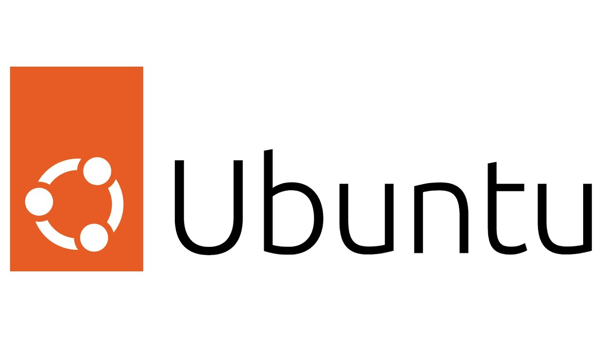
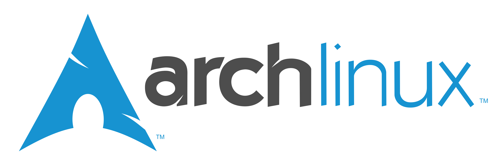

Ubuntu Server
Spécialité : Serveur polyvalent
- Distribution Linux la plus populaire
- Maintenance à long terme (LTS)
- Idéal pour les débutants et les serveurs
- Cycle de sortie prévisible
Arch Linux
Spécialité : Personnalisation extrême
- Distribution "Do It Yourself"
- Système de mise à jour continu (Rolling Release)
- Documentation exceptionnelle (Wiki Arch)
- Pour utilisateurs avancés
Kali Linux
Spécialité : Sécurité offensive
- Distribution dédiée au pentest
- Inclut 600+ outils de sécurité
- Environnement préconfiguré
- Maintenu par Offensive Security
Configuration Type

Ubuntu Server
- 2 vCPU
- 4 Go RAM
- 20 Go SSD

Arch Linux
- 2 vCPU
- 2 Go RAM
- 15 Go SSD

Kali Linux
- 4 vCPU
- 8 Go RAM
- 40 Go SSD